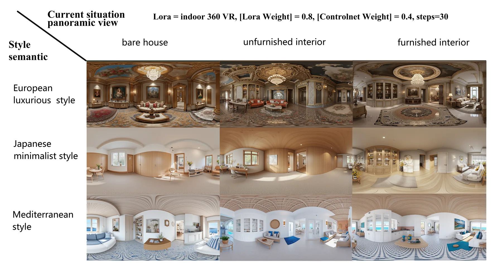

01Architectural Research
Research Depth
用问题、方法、实验指标和论文状态组织案例，而不是只展示效果图。
AI Architecture / Research / Product Prototypes
宋志诚 · 把建筑设计问题转化为可测试、可复现、可交流的 AI 工作流。
建筑学背景与 AI 原型能力交叉，关注 Human-AI Workflow、AIGC 空间可视化、Rhino Python 自动化建模和城市更新智能体系统。
brief.to_prompt_pack()
llm.generate("Rhino Python")
evaluate(massing_output)
A portfolio interface for research methods, AI workflows, Rhino prototypes, and paper outputs.
System Overview
我的研究和作品围绕建筑师与设计团队在早期方案、空间更新、建模自动化和客户沟通中的真实需求展开：如何把自然语言、图像、视频、规则参数和反馈日志转化为可编辑的模型与可解释的工作流。
01Architectural Research
用问题、方法、实验指标和论文状态组织案例，而不是只展示效果图。
02AI Workflow Design
把自然语言、图像、视频、规则参数和反馈日志转化为可编辑的模型与可解释工作流。
03Rhino / Python Prototyping
保持建筑研究语境，围绕体量、空间更新、建模和城市微空间展开。
04Product Thinking
强调用户场景、交互链路、输入输出规则和可交付的 AI 原型。
网站内容来自论文源文件、成果 PPT 与协作项目素材。公开版本只保留成果展示和邮箱联系，不公开手机号、完整简历 PDF 或原始论文/演示文件。
Featured Work

把建筑任务书、设计约束和评估指标转化为可运行的 Rhino 体量生成脚本。

面向室内更新沟通的全景图局部编辑、家具替换、风格切换与连续展示流程。

用语音或文本驱动 Rhino 脚本生成、执行和错误修复，降低建筑建模自动化门槛。
Current Paper
Architectural design brief into reproducible code for office massing generation
Early-stage office massing design often depends on tacit heuristics and repeated manual refinement. This research externalizes design knowledge into prompt packs, executable Rhino Python scripts, and measurable evaluation criteria, so LLM-assisted massing can be inspected, repeated, and compared across scenarios.